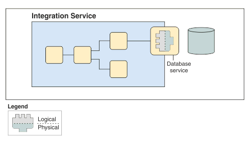

A Database Service defines a business service that is available in a database. Use the service editor to discover information from the database, such as tables, views, and the logical business operations they represent. You can then combine this information with the required database interaction (SELECT, INSERT, UPDATE, DELETE) to create a Database Service.

When you save the Database Service, the following artifacts are generated:
Use the Database Service in a message flow by dragging the Database Service onto a Compute node in the flow editor, to automatically configure connectivity to a database. In your ESQL module, call the Database Service operation by supplying the required parameters.
Click here for additional information on Database Services.